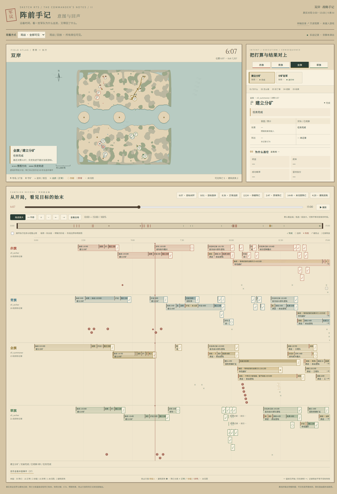
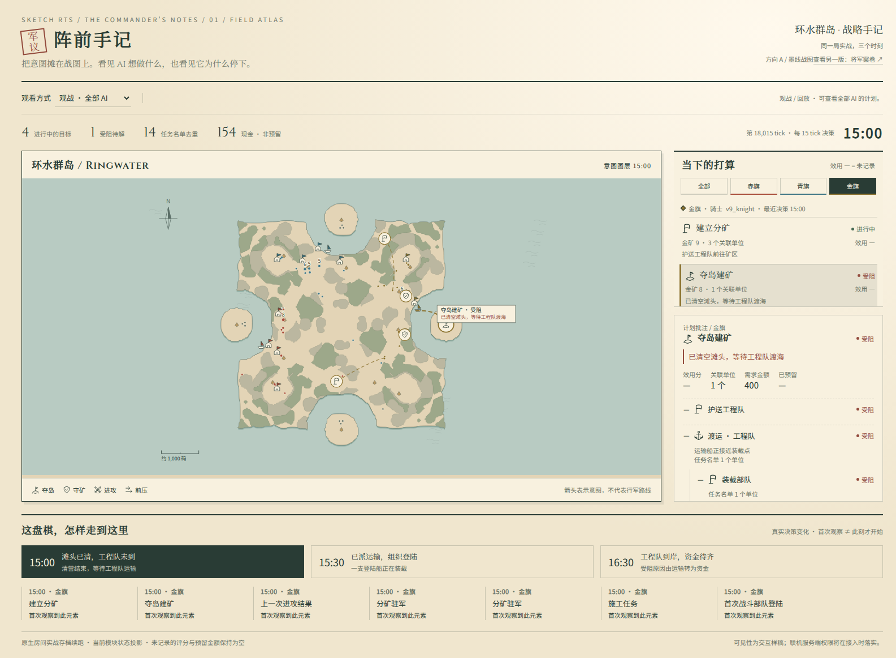
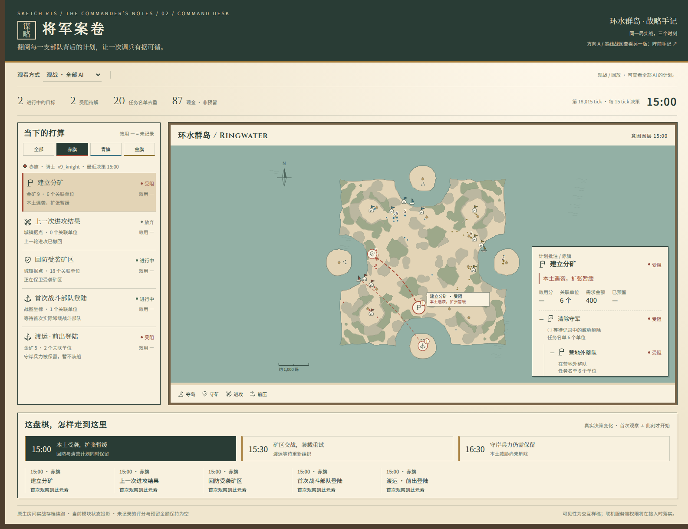

Sketch RTS / 墨线战图 / 第二轮样稿
沿着时间，把意图与结果对上
“阵前手记”第二版：时间轴成为主轴，拖动即可同步战图和计划。点击目标，沿着为什么 → 怎么做 → 派了谁 → 进展 → 结果展开；点击阵亡位置，核对死亡账本与原始证据。

II / Intent and Consequence
阵前手记 · 意图与回声
真实双岸对局 0–15 分钟，阶段分段、拖选缩放与平移；单机默认关，联机只看自己，赛后回放看全部。
打开第二版样稿 →查看第一轮样稿（风格与可见性选项的历史方案）

01 / Field Atlas
阵前手记
地图是主角，目标像写在纸边的批注。适合一边看战局，一边理解部队的意图。
打开这版样稿 →
02 / Command Desk
将军案卷
目标目录与战图并列，计划树像一张展开的军情卷宗。适合追踪原因、任务交接与变化。
打开这版样稿 →3:59–6:07 · 扩张闭环与 18 秒受阻；8:01 · 进攻放弃；正常 / 异常阵亡及建筑损失均可点开。
地图、单位、任务和变化都来自实战记录。当前模块没有保留的效用分和预留金额显示为“—”，下一步由战略层提供。
全部资源随目录提供，无需联网或启动游戏。当前仍为静态样稿，尚未接入游戏。第二版使用已确定的可见性规则。